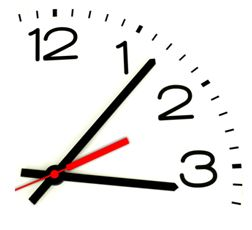

Нет, не мало времени мы имеем, а много теряем. Жизнь дана нам
достаточно долгая, и ее с избытком хватит на свершение величайших
дел, если распределить ее с умом. Но если она не направляется
доброю целью, если наша расточительность и небрежность
удивлением обнаруживаем, что жизнь, течения
которой мы не заметили, истекла.
Сенека